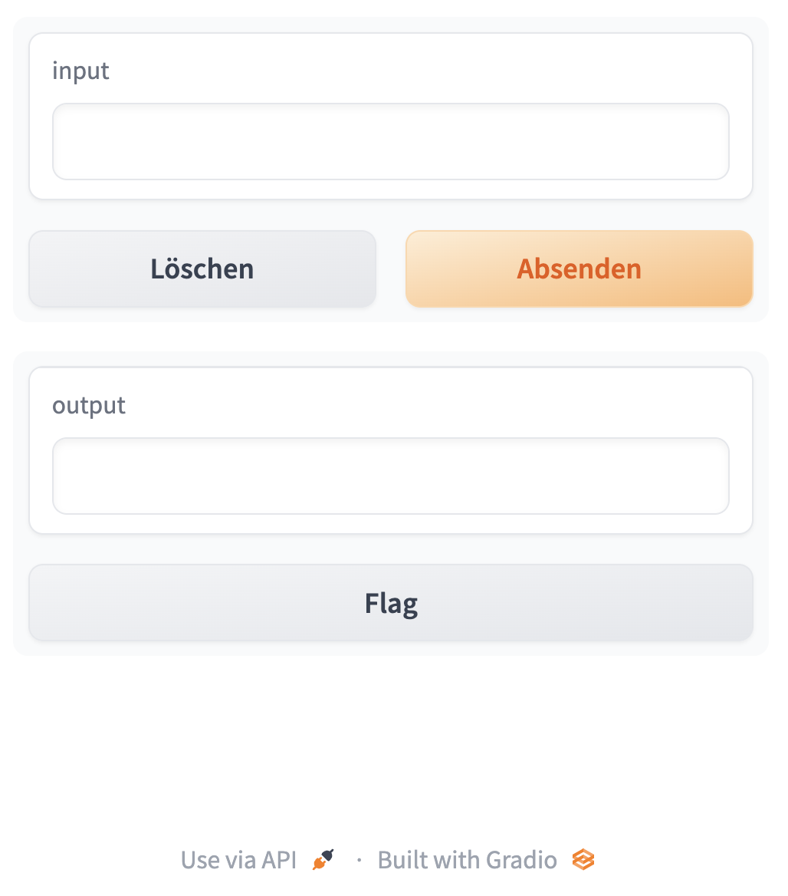

import gradio as gr
from transformers import pipeline
import os
import io
from IPython.display import Image, display, HTML
from PIL import Image
import base64
from dotenv import load_dotenv, find_dotenv
_ = load_dotenv(find_dotenv())
hf_api_key = os.environ['HF_API_KEY'] # HuggingFace APINLP apps with a simple Gradio interface
In this tutorial, you’ll create two NLP apps (text summarization and name entitiy recognition) with a Gradio interface and HuggingFace.
This tutorial is mainly based on an excellent course provided by Isa Fulford from OpenAI and Andrew Ng from DeepLearning.AI.
Setup
Python
HuggingFace
Basics
- Hugging Face is a popular library for Natural Language Processing (NLP).
- Provides easy-to-use interfaces known as
pipelinesfor common NLP tasks. - Two main ways to use Hugging Face pipelines: locally or via the API.
Local Pipeline Usage
from transformers import pipeline
# Load a pipeline
classifier = pipeline('sentiment-analysis')
# Use the pipeline
results = classifier('Hugging Face is creating a tool that democratizes AI.')Installation Required: Need to install Hugging Face Transformers library.
Data Privacy: Data remains on your local machine, ensuring privacy.
Cost: Free of charge
Performance: Performance dependent on your local machine’s capabilities.
Customization: Easier to customize and tweak the pipeline.
Local Pipeline example
from transformers import pipeline
# Load a pipeline
classifier = pipeline('sentiment-analysis')
# Use the pipeline
results = classifier('Hugging Face is creating a tool that democratizes AI.')API Pipeline Usage
No Installation required
Data Privacy Concerns: Data sent to Hugging Face servers, may not be suitable for sensitive data.
Cost: May incur charges depending on usage.
Performance: Performance dependent on network latency and Hugging Face’s server capabilities.
Customization: Limited customization compared to local usage.
API Pipeline example
import requests
# Define the API endpoint and data
url = 'https://api-inference.huggingface.co/pipeline/sentiment-analysis'
headers = {'Authorization': 'Bearer YOUR_API_TOKEN'}
data = {'inputs': 'Hugging Face is creating a tool that democratizes AI.'}
# Make a request to the API
response = requests.post(url, headers=headers, json=data)
# Print the response
print(response.json())Conclusion
Choosing between local and API pipeline usage depends on your project’s requirements regarding data privacy, cost, performance, and customization.
Both methods offer a straightforward way to leverage the power of Hugging Face for NLP tasks.
Text Summarization App
Building a text summarization app
Text summarization
- To learn more about text summarization, take a look at this tutorial
Helper function: local summarization pipeline
get_completion = pipeline(
"summarization",
model="sshleifer/distilbart-cnn-12-6"
)- We use the HuggingFace pipeline.
Helper function for API (optional) {smaller}
- To run it via API, you could use an Inference Endpoint for the
sshleifer/distilbart-cnn-12-6, a 306M parameter distilled model fromfacebook/bart-large-cnn.
# # Helper function
# import requests, json
# #Summarization endpoint
# def get_completion(inputs, parameters=None,ENDPOINT_URL=os.environ['HF_API_SUMMARY_BASE']):
# headers = {
# "Authorization": f"Bearer {hf_api_key}",
# "Content-Type": "application/json"
# }
# data = { "inputs": inputs }
# if parameters is not None:
# data.update({"parameters": parameters})
# response = requests.request("POST",
# ENDPOINT_URL, headers=headers,
# data=json.dumps(data)
# )
# return json.loads(response.content.decode("utf-8"))Text to summarize
text = ('''One of the best ways to share your machine learning model, API, or data science workflow with others is to create an interactive app that allows your users or colleagues to try out the demo in their browsers. Gradio allows you to build demos and share them, all in Python. And usually in just a few lines of code! Note that we shorten the imported name gradio to gr for better readability of code using Gradio. This is a widely adopted convention that you should follow so that anyone working with your code can easily understand it. You’ll also notice that in order to make apps, we create a gr.Interface. This Interface class can wrap any Python function with a user interface. The core Interface class is initialized with three required parameters: fn: the function to wrap a UI around; inputs: which component(s) to use for the input (e.g. "text", "image" or "audio"); outputs: which component(s) to use for the output (e.g. "text", "image" or "label") ''')Summarization example
def summarize(input):
output = get_completion(input)
return output[0]['summary_text']
summarize(text)- ’ Gradio allows you to build demos and share them in just a few lines of code . The core Interface class is initialized with three required parameters: fn: the function to wrap a UI around; inputs: which component(s) to use for the input (e.g. “text”, “image” or “audio) or”label”)’
Gradio app code
- Getting started with Gradio
gr.Interface demo.launch(share=True)creates a public link to share the app.- If you want to use the API-version, replace
demo.launch(share=False)withdemo.launch(share=True, server_port=int(os.environ['PORT1']))
# Helper function
def summarize(input):
output = get_completion(input)
return output[0]['summary_text']
# Close all current apps
gr.close_all()
# Start of the app
demo = gr.Interface(
fn=summarize,
inputs="text",
outputs="text",
examples=["One of the best ways to share your machine learning model, API, or data science workflow with others is to create an interactive app that allows your users or colleagues to try out the demo in their browsers. Gradio allows you to build demos and share them, all in Python. And usually in just a few lines of code! Note that we shorten the imported name gradio to gr for better readability of code using Gradio. This is a widely adopted convention that you should follow so that anyone working with your code can easily understand it. You’ll also notice that in order to make apps, we create a gr.Interface. This Interface class can wrap any Python function with a user interface"]
)
demo.launch(share=True)Gradio interface

Gradio with text input
Gradio with output
Extended Gradio app code
- We include more text in the user interface
def summarize(input):
output = get_completion(input)
return output[0]['summary_text']
gr.close_all()
demo = gr.Interface(fn=summarize,
inputs=[gr.Textbox(label="Text to summarize", lines=6)],
outputs=[gr.Textbox(label="Result", lines=3)],
title="Text summarization with distilbart-cnn",
description="Summarize any text using the `sshleifer/distilbart-cnn-12-6` model under the hood!"
)
demo.launch(share=True)
# API-Version
# demo.launch(share=True, server_port=int(os.environ['PORT2']))Extended Gradio output
Named Entity Recognition App
Building a Named Entity Recognition app
What is entity recognition?
Named entity recognition (NER): Find the entities (such as persons, locations, or organizations) in a sentence.
This can be formulated as attributing a label to each token by having one class per entity and one class for “no entity.”
Helper function: Named entity recognition pipeline
get_completion = pipeline("ner", model="dslim/bert-base-NER")Helper function for API-Version
- If you want to use the Inference Endpoint for
dslim/bert-base-NER, a 108M parameter fine-tuned BART model on the NER task:
# API_URL = os.environ['HF_API_NER_BASE'] #NER endpoint
# get_completion(text, parameters=None, ENDPOINT_URL= API_URL)
# API-Version
# def ner(input):
# output = get_completion(input, parameters=None, ENDPOINT_URL=API_URL)
# return {"text": input, "entities": output}Gradio NER App
def ner(input):
output = get_completion(input)
return {"text": input, "entities": output}
gr.close_all()
demo = gr.Interface(fn=ner,
inputs=[gr.Textbox(
label="Text to find entities", lines=2)],
outputs=[gr.HighlightedText(label="Text with entities")],
title="NER with dslim/bert-base-NER",
description="Find entities using the `dslim/bert-base-NER` model under the hood!",
allow_flagging="never",
# Here we introduce a new tag, examples, easy to use examples for your application
examples=["My name is Jan, I'm a professor at HdM Stuttgart and I live in Stuttgart", "My name is Lina and I study at HdM Stuttgart"])
demo.launch(share=True)
# API-Version
# demo.launch(share=True, server_port=int(os.environ['PORT3']))App interface
App with output
Gradio NER app with merged tokens
def merge_tokens(tokens):
merged_tokens = []
for token in tokens:
if merged_tokens and token['entity'].startswith('I-') and merged_tokens[-1]['entity'].endswith(token['entity'][2:]):
# If current token continues the entity of the last one, merge them
last_token = merged_tokens[-1]
last_token['word'] += token['word'].replace('##', '')
last_token['end'] = token['end']
last_token['score'] = (last_token['score'] + token['score']) / 2
else:
# Otherwise, add the token to the list
merged_tokens.append(token)
return merged_tokens
def ner(input):
output = get_completion(input)
merged_tokens = merge_tokens(output)
return {"text": input, "entities": merged_tokens}
gr.close_all()
demo = gr.Interface(fn=ner,
inputs=[gr.Textbox(
label="Text to find entities", lines=2)],
outputs=[gr.HighlightedText(label="Text with entities")],
title="NER with dslim/bert-base-NER",
description="Find entities using the `dslim/bert-base-NER` model under the hood!",
allow_flagging="never",
examples=["My name is Jan, I'm a professor at HdM Stuttgart and I live in Stuttgart", "My name is Lina, I live in Stuttgart and study at HdM Stuttgart"])
demo.launch(share=True)
# API-Version
# demo.launch(share=True, server_port=int(os.environ['PORT4']))Gradio output

Close all apps
gr.close_all()